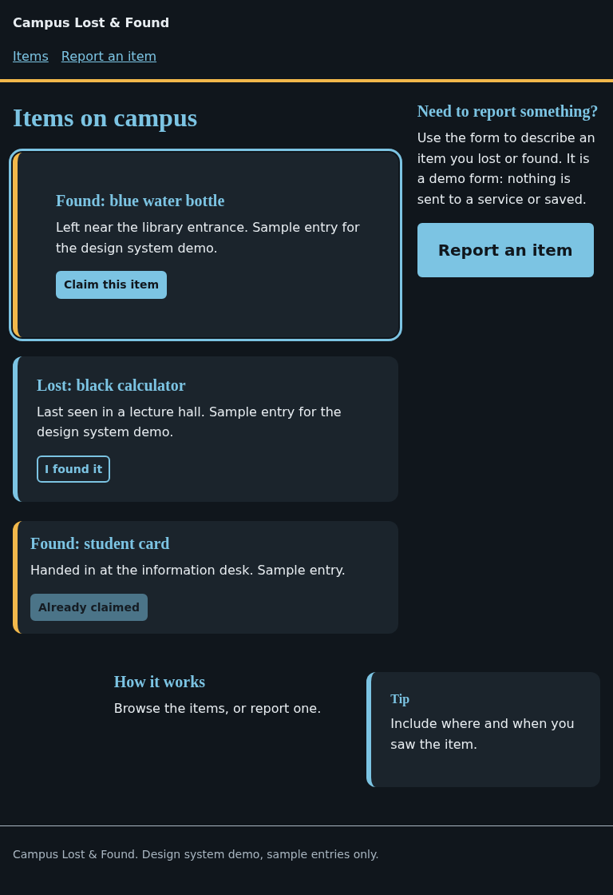
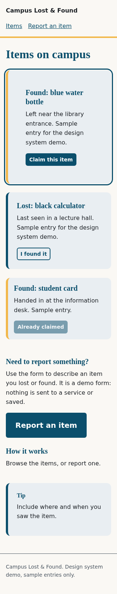
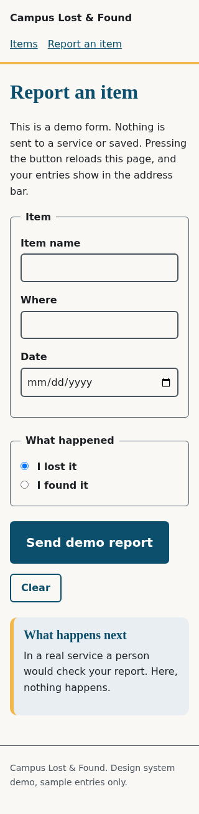
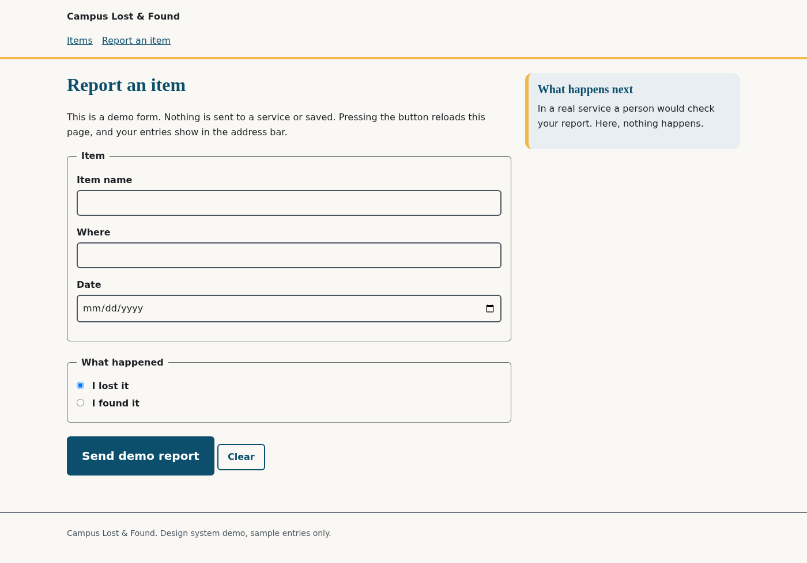
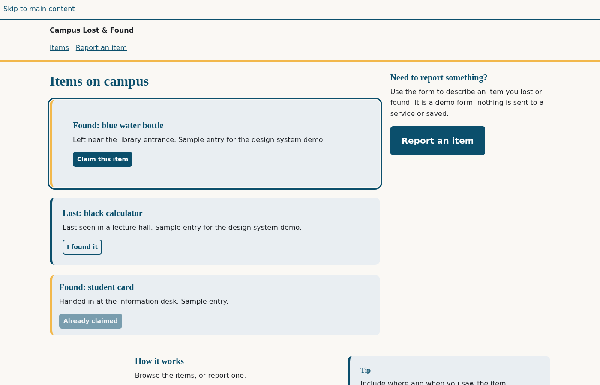
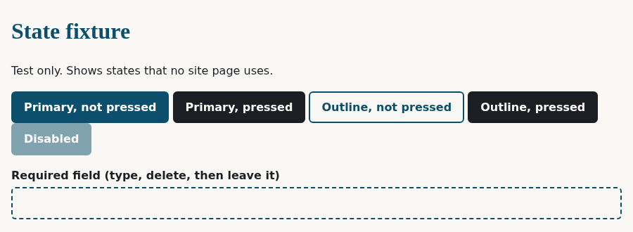

Chapter 11 project, Web Design and Development. Service: a campus lost and found. Two proof pages: index.html (items) and report.html (a demo report form: no service receives it and nothing is saved; the page just reloads with the entries in the address bar).
This project was built with the help of an AI assistant (Instinct), at the student's request. The assistant wrote the CSS files, the two HTML pages, the specification sheets, the governance note, the tests and this report, and ran the checks in the test table. It chose the service, the colour values and the names. The student must read every file, run the site in VS Code with Live Server, and be able to explain any line. The section marked "Student" is left for the student to write in his own words. Checks the student performed himself, from his own screenshots in this session: index and report pages on his machine at desktop width, the report page at 320 px, the index at 320 and 768 px, the skip link appearing on Tab, and the empty required-field submit being blocked with a dashed invalid border; the browser Console showed no red errors. Not performed by the student: skip-link activation with Enter, night theme, a screen reader, a second browser, a touch device. All other checks in section 8 were run by the assistant.
Every token is named for its role. Colour pairs carry their measured contrast ratio in a comment in tokens.css (the one place comments are kept, because the brief asks for the ratio in a comment) and in the table below. main.css has no comments; its explanations are in sections 2 to 4. Ratios use the WCAG relative luminance formula, calculated by a script.
| Token | Value | Role | Measured contrast |
|---|---|---|---|
| --color-paper | #FAF8F4 | Page background | ink 15.61:1, muted 7.17:1 |
| --color-ink | #1B1F24 | Body text | 15.61:1 on paper, 14.18:1 on surface |
| --color-muted | #4A5560 | Secondary text, form borders | 7.17:1 on paper, 6.51:1 on surface |
| --color-surface | #E9EEF2 | Card and panel background | see ink and brand |
| --color-brand | #0B4F6C | Headings, links, primary button | 8.43:1 on paper, 7.65:1 on surface |
| --color-brand-text | #FFFFFF | Text on brand | 8.94:1 on brand |
| --color-accent | #F2B84B | Decoration only (stripes, header rule). Never carries meaning alone | 1.53:1 on surface: decorative, the meaning is also in the heading text |
| --color-focus | #0B4F6C | Focus ring | 8.43:1 on paper (3:1 required) |
| --font-body / --font-heading | system-ui stack / Georgia stack | Type families | not applicable |
| --font-size-1 to 4 | 0.875 / 1 / 1.25 / 2 rem | Small note, body, card heading, page heading | not applicable |
| --space-1 to 4 | 0.5 / 1 / 1.5 / 3 rem | Every margin, padding and gap | not applicable |
| --radius-1, --radius-2 | 0.375 / 0.75 rem | Controls, cards | not applicable |
| --duration-fast, --duration-base | 120ms / 240ms | Small colour changes | not applicable |
| Token | Night value |
|---|---|
| --color-paper | #10161C |
| --color-ink | #E8EDF1 |
| --color-muted | #A9B6C1 |
| --color-surface | #1B242C |
| --color-brand | #7CC4E3 |
| --color-brand-text | #10161C |
| --color-focus | #7CC4E3 |
Measured: ink/paper 15.44:1, ink/surface 13.34:1, muted/paper 8.80:1, muted/surface 7.60:1, brand/paper 9.42:1, brand/surface 8.13:1, brand-text/brand 9.42:1. The night set changes the pages without touching any component rule (test T8).

Files. Two stylesheets: css/tokens.css (the token layer) and css/main.css (base, grid, components, utilities as @layer blocks). Explanatory comments are kept out of the code, so the reasons are written here: section 2 gives what each reboot rule replaces and why, section 3 justifies the breakpoint, section 4 explains the utilities limit (a fifth request means a component is needed, not a utility). Contrast ratios are listed in section 1.
| Rule | What it replaces in the browser default | Why |
|---|---|---|
| *, ::before, ::after | content-box sizing | width stays what is written, grid cannot overflow |
| body | 8px margin | all spacing comes from --space-* |
| h1, h2, h3, p | browser heading sizes and em margins | sizes from tokens, spacing from the scale |
| a | blue link, purple visited | link colour is a token with measured contrast |
| :focus-visible | browser-specific focus ring | one known ring |
| ul | bullets and 40px padding | lists are laid out by grid and cards |
| img | intrinsic width, can overflow | never wider than its container |
| fieldset, legend | browser border and padding | one group style |
| input, select, textarea | small system font, thin border | site font, clear border |
| header, footer, nav ul | plain blocks, vertical nav list | skeleton spacing, wrapping link row |
| .skip-link (a class, in base) | nothing | keyboard-only skip link, hidden until focused |
| transitions | instant colour change | soft change with duration tokens, off for reduced motion |
Twelve columns with CSS Grid: repeat(12, minmax(0, 1fr)). Spans: col-12, col-md-4, col-md-6, col-md-8, col-md-10, col-md-12. One offset: offset-md-2. One nested row: inside the section on index.html. One breakpoint, 48em (768px).
Why 48em. Both pages use the same layout: main takes 8 columns and the aside (a heading and the Report an item button, or a card) takes 4. Measured in headless Chrome at 768px: main 473px, aside 224px (14rem). At 1400px: main 771px, aside 373px. Below 48em the aside would get narrower than 14rem, so the columns stack (at 320px both are 273px wide). This is a rule chosen from the content actually built; no other breakpoint was tried, and 14rem is a design choice, not a tested limit.
Components: .card and .btn, each with two variants, one size axis and states read from the DOM. Utilities, four, all from the spacing scale: mt-2, mt-3, mb-2, mb-3. Layer order, declared once at the top of main.css (tokens.css is a separate file, linked before main.css): @layer base, grid, components, utilities;. No !important anywhere.
COMPONENT .card owner: web team ----------------------------------------------------- REQUIRED MARKUP <article class="card"> <h2> ... </h2> one heading, level from the outline <p> ... </p> one or more blocks of content </article> VARIANTS .card--found accent stripe, for items someone found .card--lost brand stripe, for items someone lost SIZES (one axis) (default) padding --space-3 .card--sm padding --space-2 .card--lg padding --space-4 STATES (read from the DOM) [aria-current="true"] 3px focus-colour outline, offset 2px (no hover state: the card is not a control) TOKENS --card-surface --card-accent --card-pad (all set inside .card) From the system: --color-surface, --color-accent, --color-brand, --color-muted, --space-*, --radius-2 DO NOT nest a card in a card; style .card from a page stylesheet; add a third variant; rely on the stripe colour alone: the heading says Found or Lost
COMPONENT .btn owner: web team ----------------------------------------------------- REQUIRED MARKUP <button class="btn btn--primary" type="button"> label </button> or <a class="btn btn--primary" href="..."> label </a> for navigation VARIANTS .btn--primary filled brand background, brand-text label .btn--outline transparent background, brand label and border SIZES (one axis) (default) padding --space-1 / --space-2 .btn--sm smaller padding and font-size-1 .btn--lg larger padding and font-size-3 STATES (read from the DOM) :disabled opacity 0.5, not-allowed cursor [aria-pressed="true"] ink background, paper label :focus-visible from the base layer TOKENS --btn-bg --btn-text --btn-pad-y --btn-pad-x (all set inside .btn) From the system: --color-brand, --color-brand-text, --color-ink, --color-paper, --space-*, --radius-1, --duration-fast DO NOT use a div as a button; style .btn from a page stylesheet; add a third variant
To add a token, open tokens.css and give it a name that states its role, not its look: --color-warning, not --color-orange. Put the value in :root and, if the night theme needs a different value, in [data-theme="night"]. For every colour pair it will sit on, measure the contrast with the WCAG formula and write the ratio in a comment beside it. Do not add a token that nothing uses. To add a component, write a one-page specification sheet first, in the form of the .card sheet: required markup, variants, sizes, states, tokens, and what not to do. Then add the rules to the components layer in main.css, using only var() values. A component may have a size axis only through custom properties, never through a page stylesheet. To retire a component, delete its sheet and its rules together, then search every page for its class name. A fifth utility is never added. Four utilities exist, all from the spacing scale. If someone asks for another, treat it as evidence that a component is missing and write the sheet. The layer order is declared once, in main.css. Never use !important: change the layer order or the token instead. Before merging, search the stylesheets for literal colours outside tokens.css and for the word important, and test at 320, 768 and 1400 pixels.
Both pages are built only from the system: no style attribute, no style tag, no page stylesheet (tests T1, T3, T5).





Run on the final files (css/tokens.css and css/main.css, pages linking both) in headless Chrome and with scripts. These were run by the assistant, not by the student. Student-run checks are listed in the AI-use statement.
| ID | Test | Result | Verdict |
|---|---|---|---|
| T1 | Literal colour (hex, rgb, hsl) in any stylesheet except tokens.css | 0 matches in main.css | Pass |
| T2 | Utility classes in the utilities layer | 4 (mt-2, mt-3, mb-2, mb-3) | Pass (limit 4) |
| T3 | !important in css or html | 0 matches | Pass |
| T4 | Layer order declared once | One line, first in main.css: @layer base, grid, components, utilities; | Pass |
| T5 | style attributes in the pages | 0 in index.html and report.html; no style or script tags, no page stylesheet | Pass |
| T6 | Horizontal overflow at 320, 768, 1400 | scrollWidth 305/320, 753/768, 1385/1400 on both pages (15 px scrollbar): no overflow | Pass |
| T7 | Screenshots of both pages at 320, 768, 1400 read by the assistant | Readable; aside below main at 320, beside it at 768 and 1400; nested row and offset visible on index | Pass |
| T8 | Theming: data-theme="night" on html, no rule changed | Body becomes rgb(16,22,28) with text rgb(232,237,241); layout identical (screenshots index_night_1400, report_night_1400) | Pass |
| T9 | Contrast of every colour pair that main.css uses (ink, muted and brand on paper and on surface; brand-text on brand), day and night | WCAG formula by script. Day: ink 15.61 / 14.18, muted 7.17 / 6.51, brand 8.43 / 7.65, brand-text on brand 8.94. Night: ink 15.44 / 13.34, muted 8.80 / 7.60, brand 9.42 / 8.13, brand-text on brand 9.42. Each ratio is in a comment in tokens.css (brand on surface was missing from the comments until this revision and was added). Accent is decorative only. | Pass (calculated, not a page audit) |
| T10 | Keyboard (Chrome key events): Tab order, outline, Enter on skip link | Index: skip link, Items, Report an item, Claim this item, I found it, Report an item. Report: skip link, Items, Report an item, name, where, date (three stops), radio, Send demo report, Clear. Each stop had a 3px solid outline, except one internal stop of the date field (the picker button) that reported none. Enter on the skip link: address gains #main-content and main is focused, both pages. | Pass, with the date-picker stop noted |
| T11 | HTML validity (W3C Nu checker) | index.html and report.html: 0 messages | Pass |
| T12 | CSS validity (W3C Jigsaw, CSS3 + SVG profile) | main.css: valid, 0 errors, 51 warnings (all "CSS variables are not statically checked"); tokens.css: valid, 0 errors | Pass |
| T13 | States in tests/state_fixture.html, final files | Pressed (primary and outline): rgb(250,248,244) on rgb(27,31,36), 15.61:1. Disabled: opacity 0.5. :user-invalid after typing, deleting and leaving the field: matches, border dashed brand colour, 2px. | Pass (fixture only; no site page uses these states) |
| T14 | Form behaviour on report.html, final files | With an item name typed, submit reloads the page as report.html?item-name=test+bottle&item-where=&item-date=&kind=lost: nothing is sent to a server, but the entries show in the address bar and history. With the required name empty, validation fails and the submit is blocked. | Pass |
| T15 | Literal sizes in main.css | Spacing values now come from the --space scale: the two 0.25rem values (label margin and the small button vertical padding) were literals and now use calc(var(--space-1) / 2); the rendered result is unchanged (screenshots byte-identical). Literals that remain are not spacing-scale values: border and outline widths (1px, 2px, 3px, 0.25rem header rule, 0.375rem card stripe), outline offset, the container max width, the off-screen skip-link offset and the 48em breakpoint (a media query cannot read a custom property). | Pass, with these listed exceptions |
Not run:



These are the moments the assistant recorded while building this example, when a rule outside the system was tempting, and what was done instead. They are the assistant's entries, not the student's. The student must add his own entries below, or confirm which of these he actually met.
| What happened | The temptation | What was done |
|---|---|---|
| The aside heading sat lower than the main heading, because main had its own padding. | Add a rule to a page stylesheet. | Removed the main padding from the base layer and used the existing .mt-3 on the row. No new rule outside the system. |
| The nested row inside the offset section was squeezed into a narrow column, and the offset did nothing at first. | Put a width on the section, or fix it with a page rule. | Found the cause inside the system: the span rules used grid-column: span N, which reset the start line. Changed them to auto / span N so the offset works, and added a col-md-10 span to the grid. |
| The tip card was cramped and the featured card needed more air. | Write custom padding on those cards. | Used the size axis: .card--lg on the featured card, the default size on the tip card. |
| The skip link needs its own style, and it is a class, not an element. | Put it in a page stylesheet. | Put it in the base layer and listed it in the base notes. Conceded: it is the one class selector in the base layer. Kept because every page needs it and there is no element to hang the rule on. |
| A margin-bottom was needed next to .mt-2 and .mt-3. | Add .mb-4, .mt-4 and more. | Stopped at four utilities: mt-2, mt-3, mb-2, mb-3. No fifth was needed. |
Student's own temptation entries: [write here: each moment you were tempted to add a rule outside the system and what you did instead.]
Draft for the student to review and edit before submission. It was written by the assistant from what happened in the build sessions, not by the student. The student must change anything that is not true for him.
I built the Campus Lost and Found pages from a design system instead of styling each page. I learned that tokens come first: every colour, space and size is a named value, so changing the theme means changing values in tokens.css and nothing else. I was confused about the files at first, because the brief names only tokens.css and the rest could be layers. We kept two files: tokens.css and main.css with the layer order declared at the top. I also learned why the grid and components sit in layers, so a later rule cannot beat an earlier one without !important, which we never used. In testing I opened the pages at 320 and 768 pixels, saw the layout change, and submitted the form with required fields empty to see it blocked. The hard part was understanding how a layer order decides which rule wins. I have not tested a screen reader or a second browser.
| Deliverable | Where | Status |
|---|---|---|
| 1 Token layer | css/tokens.css, section 1 | Tokens written; ratios calculated by script and kept in comments in tokens.css (the student approved this one exception to his no-comments preference) |
| 2 Base layer with a note per rule | main.css base layer, section 2 | Written by the assistant; student to read and be able to explain |
| 3 Twelve-column grid: spans, an offset, a nested row, one breakpoint justified from content | main.css grid layer, section 3 | Written by the assistant; breakpoint measured in headless Chrome; re-check in his browser |
| 4 Two components with two variants, a size axis and states from the DOM; at most four utilities; declared @layer order; no !important | main.css (components and utilities layers, layer order) | Written by the assistant; re-check on final files; pressed and invalid states checked in a fixture, not on a page (T11, T12) |
| 5 One specification sheet per component and a governance note of about 200 words | sections 5 and 6 | Written by the assistant; governance note is 216 words |
| 6 Two proof pages verified at 320, 768, 1400 and a temptation report | index.html, report.html, sections 7 to 9 | Layout, overflow, keyboard and HTML validator run by the assistant on the example build; reflection is a draft for the student to edit; his own temptation entries are empty; screen reader, second browser and touch not run |